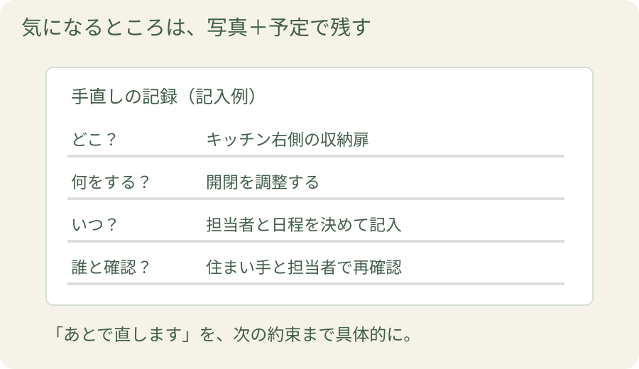

新しくなったキッチンに、まっさらなお風呂。うれしくて、説明を聞くだけで終わってしまいそうな引き渡しの日。使い始めてから慌てないよう、ここでは少し時間を取り、いつもの使い方を自分の手で試してみませんか。扉を開く、水を流す、リモコンを押す。このひと手間が、使い始めてからの「困った」を減らします。
1. 当日持っていくものと、立ち会う人
仕上がりを確かめる「完成検査（竣工検査）」は、引き渡し前に担当者と日程を決めておきましょう。手直しが必要な場合に対応する時間も見込んでもらいます。確認する日時が決まったら、契約時の見積書、図面や仕様書、工事中に変更した内容の記録をそろえます。色や品番を決めた資料があれば、それも一緒に。どの書類を用意すればよいかわからなければ、「当日、一緒に確認する図面や商品一覧を用意してもらえますか」と担当者に聞いてみましょう。
可能なら、普段その場所をよく使う人に立ち会ってもらいましょう。キッチンを使う人、浴室を掃除する人など、それぞれ気になる点が違うからです。写真とメモを残せるスマートフォンもあると便利です。
2. 「見る」色、仕上がり、頼んだ範囲
まずは担当者の説明を受けながら、予定した工事が終わっているかを確認します。色や材料、設備の品番などを、打ち合わせの内容と照らし合わせましょう。
| 確認する場所の例 | 見たいこと |
|---|---|
| 壁・床 | 汚れや傷、気になる浮きや継ぎ目はないか |
| 設備まわり | 選んだ商品・色と合っているか、周囲の仕上げはどうか |
| 工事の境目 | 直すと決めた範囲が終わっているか |
| 見えない部分 | 施工写真などで説明を受けられるか |
気になる箇所は、その場で場所を示して聞きます。「少し気になるけれど、言いづらいな」と感じたときは、「この隙間は、このままで大丈夫でしょうか」と場所を指して聞いてみてください。自分で良し悪しを判定しようとせず、気になったことをそのまま伝えると、必要な説明や手直しの相談につながります。
屋根や高い場所は、自分で上がって確認せず、施工写真などを見せてもらいましょう。
3. 「動かす」いつもの使い方を試す

見た目の確認が済んだら、担当者と一緒に動かしてみます。扉を開ける、引き出しを引く、水栓を操作する。設備の説明を聞きながら、普段の動きを試してみましょう。
例えばキッチンなら、収納に手が届くか、引き出しの開閉に気になるところがないか。浴室なら、リモコンの操作や換気の使い分け。毎日使う機能を自分で操作すると、あとから説明書を探す手間も減らせます。
私なら、「今日から使う操作」と「掃除のときにする操作」を分けて教わります。 フィルターや部品の外し方など、無理に触ると困るところも一緒に確認できるからです。
| 場所 | 自分で試すこと | その場で聞くこと |
|---|---|---|
| キッチン | 引き出す、湯水を出す、照明を点ける | 排水口の掃除、収納部品の外し方 |
| 浴室 | 水栓・リモコンを操作 | 換気・乾燥の使い分け、使用開始時刻 |
| 窓・建具 | 開閉して鍵をかける | 引っ掛かりや気になる音の確認 |
使い方を教わるときは、自分の手で一度操作してみるのがおすすめです。「わかったつもり」を減らせます。操作動画を撮りたいときは、担当者に一声かけてから残しましょう。
4. 「聞く」手入れと、困ったときの窓口
確認が終わる前に、スマホへ残したい3つの答え
- 今日から使ってよいのはどこ？ 隙間を埋めた材料など、乾燥を待つ場所は？
- 水漏れや動作の不具合に気づいたら、まず誰に連絡する？
- 夜間や休日に困ったときの連絡先は？
新しい設備を長く使うために、使える洗剤、掃除する場所、手入れの頻度を聞きましょう。「今まで使っていた掃除道具は、この素材にも使えますか」と尋ねるのも具体的です。
保証は、期間と一緒に対象や条件も確認します。設備メーカーの保証と施工会社の工事保証では、対象や相談先が異なることがあります。点検の予定、有料になる対応、連絡先を確認しておくと、その後の相談がスムーズです。
電話番号を一つ登録するなら、「不具合が起きたとき、まずどこへ連絡すればいいか」を聞いてから登録しましょう。
5. 「受け取る」書類と、残っている対応の記録
説明書、保証書、工事に関する書類や写真など、受け取る資料を担当者と確認します。紙とデータが混在しても、保存場所がわかるように一つの一覧にしておくと便利です。

手直しなどが残る場合は、気になる場所、対応内容、予定日、連絡する人を記録します。「後で対応します」で終わらず、いつ確かめるかまで書面で共有しておきましょう。
「工事が終わったことを確認しました」という書類に署名する前に、残っている手直しの内容と予定日が書面に残っているかを一緒に確かめましょう。最後の支払いは、契約した条件と追加・変更の記録を見ながら説明してもらいます。「この金額は、どの工事の分ですか」と聞き、内容がわかってから進めると安心です。